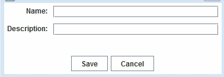

The online Visualizer allows you to save specific networks as well as visualizations for future use. From the "File" menu, click the menuItem "Save Graph Data..", you will get a small window like this:

The saved network can be accessed under the Saved Visualization tab under Visual Analytics.
Currently, the visualizer only supports C-IKNOW data format. In the future, it will support GraphML and DL format.
Save specific networks as well as visualizations in the client server for future use.
The visualizer can automatically capture the graph image and legend of the network image.
To obtain technical support, please send email to: ciknow@northwestern.edu